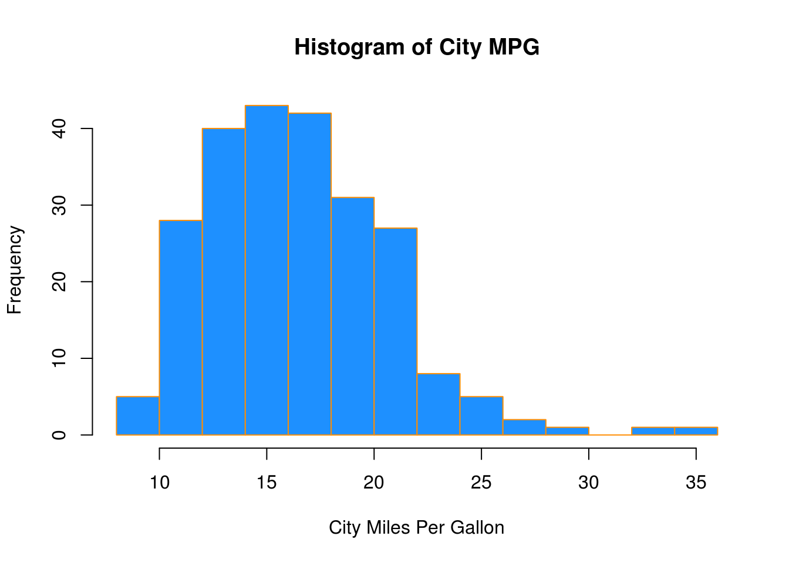
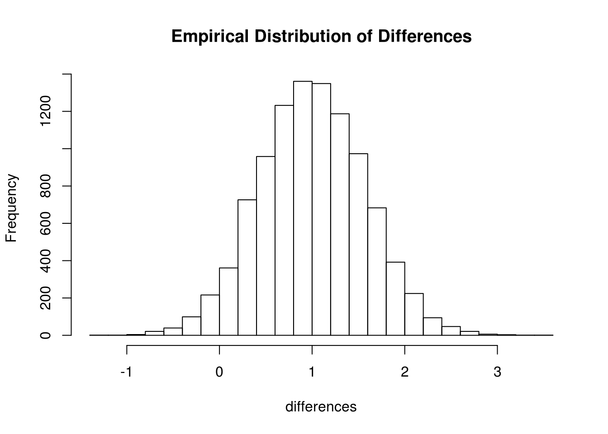
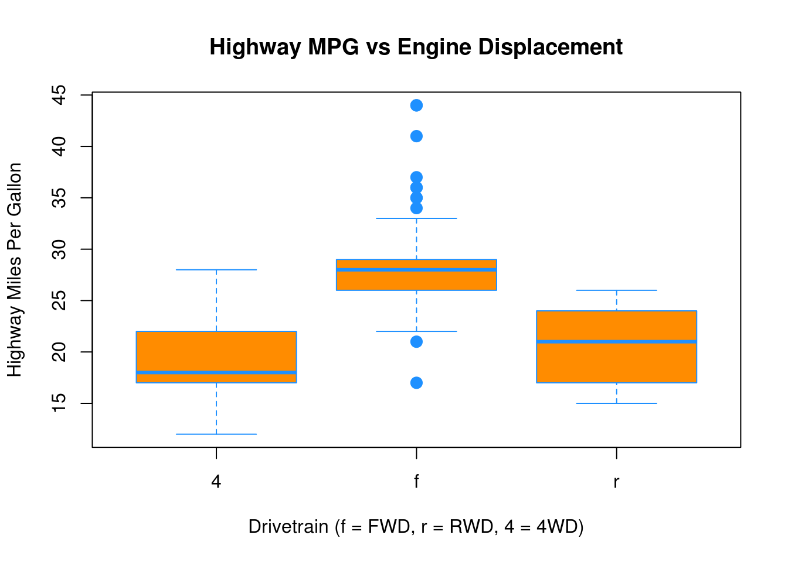
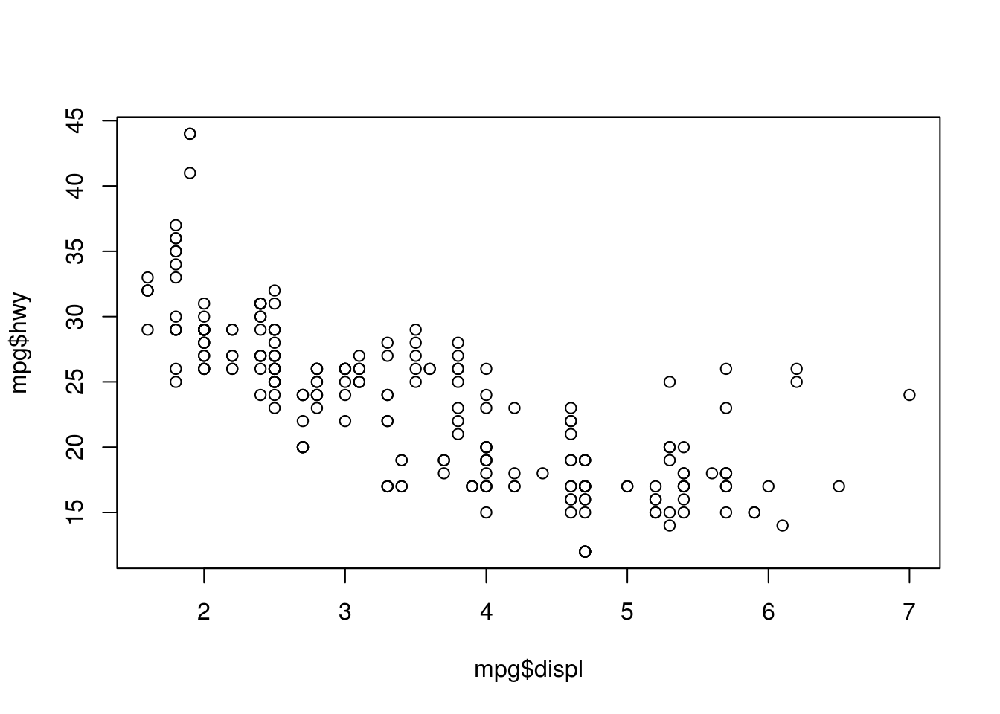
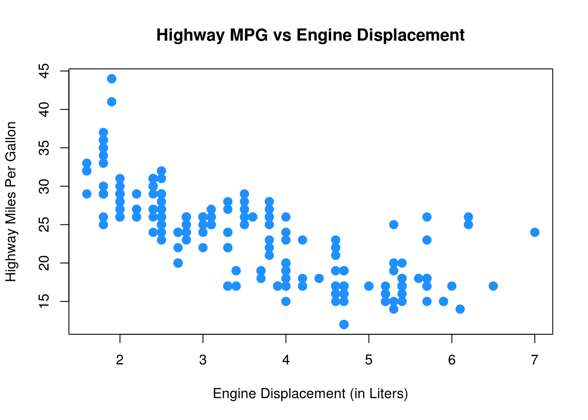

Chapter 2 Introduction to R
“Measuring programming progress by lines of code is like measuring aircraft building progress by weight.”
— Bill Gates
R is both a programming language and software environment for statistical computing, which is free and open-source. To get started, you will need to install two pieces of software:
R, the actual programming language, which can be installed from http://cran.r-project.org/- Chose your operating system, and select the most recent version. (As of writing, 3.3.0.)
- RStudio, an excellent IDE for working with
R, which can be obtained from http://www.rstudio.com/ (Note, you must haveRinstalled to use RStudio. RStudio is simply a way to interact withR.)
R’s popularity is on the rise, and everyday it becomes a better tool for statistical analysis. It even generated this book! (A skill you will learn in this coruse.) There are many good resoruces for learning R. They are not necessary for this course, but you may find them useful if you would like a deeper understanding of R:
- Try R from Code School.
- An interactive introduction to the basics of
R. Could be very useful for getting up to speed onR’s syntax.
- An interactive introduction to the basics of
- Quick-R by Robert Kabacoff.
- A good reference for
Rbasics.
- A good reference for
- R Tutorial by Chi Yau.
- A combination reference and tutorial for
Rbasics.
- A combination reference and tutorial for
- The Art of
RProgramming by Norman Matloff.- Gentle introduction to the programming side of
R. (Whereas we will focus more on the data analysis side.) A free electronic version is available through the Illinois library.
- Gentle introduction to the programming side of
- Advanced
Rby Hadley Wickham.- From the author of several extremely popular
Rpackages. Good follow-up to The Art ofRProgramming. (And more up-to-date material.)
- From the author of several extremely popular
- The R Inferno by Patrick Burns.
- Likens learning the tricks of
Rto descending through the levels of hell. Very advanced material, but may be important ifRbecomes a part of your everyday toolkit.
- Likens learning the tricks of
- R Markdown from RStudio.
- Reference materials for RMarkdown.
RStudio has a large number of useful keyboard shortcuts. A list of these can be found using a keyboard shortcut, the keyboard shortcut to rule them all:
- On Windows:
Alt+Shift+K - On Mac:
Option+Shift+K
The RStudio team has developed a number of “cheatsheets” for working with both R and RStudio which can be found here or from the help menu inside of RStudio. This one for Base R in particular will summarize many of the concepts in this document.
When programing, it is often a good practice to follow a style guide. (Where do spaces go? Tabs of spaces? Underscores of CamelCase when naming variables?) No style guide is “correct” but it helps to be aware of what some others do. The more import thing is to be consistent with yourself.
For this course, our main deviation from these two guides is the use of = in place of <-. (More on that later.)
2.1 R Basics
2.1.1 Basic Calculations
To get started, we’ll use R like a simple calculator. Note, in R the # symbol is used for comments. Lines which begin with two, ## will indicate output.
- Addition, Subtraction, Multiplication and Division
3 + 2## [1] 53 - 2## [1] 13 * 2## [1] 63 / 2## [1] 1.5- Exponents
3 ^ 2## [1] 92 ^ (-3)## [1] 0.125100 ^ (1 / 2)## [1] 10sqrt(1 / 2)## [1] 0.7071068exp(1)## [1] 2.718282- Mathematical Constants
pi## [1] 3.141593exp(1)## [1] 2.718282- Logarithms
log(10) # natural log## [1] 2.302585log10(1000) # base 10 log## [1] 3log2(8) # base 2 log## [1] 3log(16, base = 4) # base 4 log## [1] 2- Trigonometry
sin(pi / 2)## [1] 1cos(0)## [1] 12.1.2 Getting Help
In using R as a calculator, we have seen a number of functions. sqrt(), exp(), log() and sin() are all R functions. To get documentation about a function in R, simply put a question mark in front of the function name and RStudio will display the documentation, for example:
?log
?sin
?paste
?lmFrequently one of the most difficult things to do when learning R is asking for help. First, you need to decide to ask for help, then you need to know how to ask for help. Your very first line of defense should be to Google your error message or a short description of your issue. (The ability to solve problems using this method is quickly becoming an extremely valuable skill.) If that fails, and it eventually will, you should ask for help. There are a number of things you should include when emailing an instructor, or posting to a help website such as http://stats.stackexchange.com/.
- Describe what you expect the code to do.
- State the end goal you are trying to achieve. (Sometimes what you expect the code to do, is not what you want to actually do.)
- Provide the full text of any errors you have received.
- Provide enough code to recreate the error. Often for the purpose of this course, you could simply email your entire
.Ror.Rmdfile. - Sometimes it is also helpful to include a screenshot of your entire RStudio window when the error occurs.
If you follow these steps, you will get your issue resolved much quicker, and possibly learn more in the process. Do not be discouraged by running into errors and difficulties when learning R. (Or any technical skill.) It is simply part of the learning process.
2.1.3 Installing Packages
R comes with a number of built-in functions and datasets, but one of the main strengths of R as an open-source project is its package system. Packages add additional functions and data. Frequently if you want to do something in R, and it isn’t available by default, there is a good chance that there is a package that will fulfill your needs.
To install a package, use the install.packages() function.
install.packages("ggplot2")Once a package is install, it must be loaded in your current R session before being used.
library(ggplot2)2.1.4 Data Types
R has a number of basic data types.
- Numeric
- Also known as Double. The default type when dealing with numbers.
- Examples:
1,1.0,42.5.
- Integer
- Examples:
1,2,42
- Examples:
- Complex
- Example:
4 + 2i
- Example:
- Logical
- Two possible values:
TRUEandFALSE. - You can also use
TandF, but this is not recommended. NAis also considered logical.
- Two possible values:
- Character
- Examples:
"a","Statistics","1 plus 2."
- Examples:
R also has a number of basic data structures. Data structures can be either homogeneous (contain only a single data type) or heterogeneous. (Contain more than one data type.)
| Dimension | Homogeneous | Heterogeneous |
|---|---|---|
| 1 | Vector | List |
| 2 | Matrix | Data Frame |
| 3+ | Array |
2.1.5 Vectors
Many operations in R make heavy use of vectors. Vectors in R are indexed starting at 1. That is what the [1] in the output is indicating, that the first element of the row being displayed is the first element of the vector. Larger vectors will start additional rows with [*] where * is the index of the first element of the row.
Possibly the most common way to create a vector in R is using the c() function, which is short for combine. As the name suggests, it combines a list of numbers separated by commas.
c(1, 3, 5, 7, 8, 9)## [1] 1 3 5 7 8 9Here R simply outputs this vector. If we would like to store this vector in a variable we can do so with the assignment operator =. In this case the variable x now holds the vector we just created, and we can access the vector by typing x.
x = c(1, 3, 5, 7, 8, 9)
x## [1] 1 3 5 7 8 9As an aside, there is a long history of the assignment operator in R. For simplicity we will use =, but know that often you will see <- as the assignment operator. The pros and cons of these two are well beyond the scope of this book, but know that for our purposes you will have no issue if you simply use =.
Frequently you may wish to create a vector based on a sequence of numbers. The quickest and easiest way to do this is with the : operator, which creates a sequence of integers between two specified integers.
(y = 1:100)## [1] 1 2 3 4 5 6 7 8 9 10 11 12 13 14 15
## [16] 16 17 18 19 20 21 22 23 24 25 26 27 28 29 30
## [31] 31 32 33 34 35 36 37 38 39 40 41 42 43 44 45
## [46] 46 47 48 49 50 51 52 53 54 55 56 57 58 59 60
## [61] 61 62 63 64 65 66 67 68 69 70 71 72 73 74 75
## [76] 76 77 78 79 80 81 82 83 84 85 86 87 88 89 90
## [91] 91 92 93 94 95 96 97 98 99 100Here we see R labeling the rows after the first since this is a large vector. Also, we see that by putting parentheses around the assignment, R both stores the vector in a variable called y and automatically outputs y to the console.
To subset a vector, we use square brackets, [].
x## [1] 1 3 5 7 8 9x[1]## [1] 1x[3]## [1] 5We see that x[1] returns the first element, and x[3] returns the third element.
x[-2]## [1] 1 5 7 8 9We can also exclude certain indexes, in this case the second element.
x[1:3]## [1] 1 3 5x[c(1,3,4)]## [1] 1 5 7Lastly we see that we can subset based on a vector of indicies.
x = 1:10One of the biggest strengths of R is its use of vectorized operations. (Frequently the lack of understanding of this concept leads of a belief that R is slow. R is not the fastest language, but it has a reputation for being slower than it really is.)
x + 1## [1] 2 3 4 5 6 7 8 9 10 112 * x## [1] 2 4 6 8 10 12 14 16 18 202 ^ x## [1] 2 4 8 16 32 64 128 256 512 1024sqrt(x)## [1] 1.000000 1.414214 1.732051 2.000000 2.236068 2.449490
## [7] 2.645751 2.828427 3.000000 3.162278log(x)## [1] 0.0000000 0.6931472 1.0986123 1.3862944 1.6094379 1.7917595
## [7] 1.9459101 2.0794415 2.1972246 2.3025851We see that when a function like log() is called on a vector x, a vector is returned which has applied the function to each element of the vector x.
The length of a vector can be obtained with the length() function.
vec_1 = 1:10
vec_2 = 1:1000
vec_3 = 42
length(vec_1)## [1] 10length(vec_2)## [1] 1000length(vec_3)## [1] 1Note that scalars do not exists in R. They are simply vectors of length 1.
If we want to create a sequence that isn’t limited to integers and increasing by 1 at a time, we can use the seq() function.
seq(from = 1.5, to = 4.2, by = 0.1)## [1] 1.5 1.6 1.7 1.8 1.9 2.0 2.1 2.2 2.3 2.4 2.5 2.6 2.7 2.8 2.9
## [16] 3.0 3.1 3.2 3.3 3.4 3.5 3.6 3.7 3.8 3.9 4.0 4.1 4.2We will discuss functions later, but note here that from, to and by are optional.
seq(1.5, 4.2, 0.1)## [1] 1.5 1.6 1.7 1.8 1.9 2.0 2.1 2.2 2.3 2.4 2.5 2.6 2.7 2.8 2.9
## [16] 3.0 3.1 3.2 3.3 3.4 3.5 3.6 3.7 3.8 3.9 4.0 4.1 4.2Another common operation to create a vector is rep(), which can repeat a single value a number of times.
rep(0.5, times = 10)## [1] 0.5 0.5 0.5 0.5 0.5 0.5 0.5 0.5 0.5 0.5Or, rep() can be used to repeat a vector a number of times.
rep(x, times = 3)## [1] 1 2 3 4 5 6 7 8 9 10 1 2 3 4 5 6 7 8 9 10
## [21] 1 2 3 4 5 6 7 8 9 10We have now seen four different ways to create vectors:
c():seq()rep()
So far we have mostly used them in isolation, but they are often used together.
c(x, rep(seq(1, 9, 2), 3), c(1, 2, 3), 42, 2:4)## [1] 1 2 3 4 5 6 7 8 9 10 1 3 5 7 9 1 3 5 7 9
## [21] 1 3 5 7 9 1 2 3 42 2 3 42.1.6 Summary Statistics
R has built in functions for a large number of summary statistics.
y## [1] 1 2 3 4 5 6 7 8 9 10 11 12 13 14 15
## [16] 16 17 18 19 20 21 22 23 24 25 26 27 28 29 30
## [31] 31 32 33 34 35 36 37 38 39 40 41 42 43 44 45
## [46] 46 47 48 49 50 51 52 53 54 55 56 57 58 59 60
## [61] 61 62 63 64 65 66 67 68 69 70 71 72 73 74 75
## [76] 76 77 78 79 80 81 82 83 84 85 86 87 88 89 90
## [91] 91 92 93 94 95 96 97 98 99 100- Central Tendancy
mean(y)## [1] 50.5median(y)## [1] 50.5- Spread
var(y)## [1] 841.6667sd(y)## [1] 29.01149IQR(y)## [1] 49.5min(y)## [1] 1max(y)## [1] 100range(y)## [1] 1 1002.1.7 Matrices
R can also be used for matrix calculations. Matrices can be created using the matrix function.
TODO: matrix all same “data”" type. “order matters”. has rows and columns
By default the matrix function reorders a vector into columns, but we can also tell R to use rows instead.
x = 1:9
x## [1] 1 2 3 4 5 6 7 8 9X = matrix(x, nrow = 3, ncol = 3)
X## [,1] [,2] [,3]
## [1,] 1 4 7
## [2,] 2 5 8
## [3,] 3 6 9Y = matrix(x, nrow = 3, ncol = 3, byrow = TRUE)
Y## [,1] [,2] [,3]
## [1,] 1 2 3
## [2,] 4 5 6
## [3,] 7 8 9Z = matrix(0, 2, 4)
Z## [,1] [,2] [,3] [,4]
## [1,] 0 0 0 0
## [2,] 0 0 0 0X## [,1] [,2] [,3]
## [1,] 1 4 7
## [2,] 2 5 8
## [3,] 3 6 9X[1, 2]## [1] 4X[1, ]## [1] 1 4 7X[, 2]## [1] 4 5 6X[2, c(1, 3)]## [1] 2 8Matrices can also be created by combining vectors as columns, using cbind or combining vectors as rows using rbind.
x = 1:9
rev(x)## [1] 9 8 7 6 5 4 3 2 1rep(1, 9)## [1] 1 1 1 1 1 1 1 1 1cbind(x, rev(x), rep(1, 9))## x
## [1,] 1 9 1
## [2,] 2 8 1
## [3,] 3 7 1
## [4,] 4 6 1
## [5,] 5 5 1
## [6,] 6 4 1
## [7,] 7 3 1
## [8,] 8 2 1
## [9,] 9 1 1rbind(x, rev(x), rep(1, 9))## [,1] [,2] [,3] [,4] [,5] [,6] [,7] [,8] [,9]
## x 1 2 3 4 5 6 7 8 9
## 9 8 7 6 5 4 3 2 1
## 1 1 1 1 1 1 1 1 1R can then be used to perform matrix calculations.
x = 1:9
y = 9:1
X = matrix(x, 3, 3)
Y = matrix(y, 3, 3)
X## [,1] [,2] [,3]
## [1,] 1 4 7
## [2,] 2 5 8
## [3,] 3 6 9Y## [,1] [,2] [,3]
## [1,] 9 6 3
## [2,] 8 5 2
## [3,] 7 4 1X + Y## [,1] [,2] [,3]
## [1,] 10 10 10
## [2,] 10 10 10
## [3,] 10 10 10X - Y## [,1] [,2] [,3]
## [1,] -8 -2 4
## [2,] -6 0 6
## [3,] -4 2 8X * Y## [,1] [,2] [,3]
## [1,] 9 24 21
## [2,] 16 25 16
## [3,] 21 24 9X / Y## [,1] [,2] [,3]
## [1,] 0.1111111 0.6666667 2.333333
## [2,] 0.2500000 1.0000000 4.000000
## [3,] 0.4285714 1.5000000 9.000000Note that X * Y is not matrix multiplication. It is element by element multiplication. (Same for X / Y). Instead, matrix multiplication uses %*%. t() gives the transpose of a matrix, and solve() returns the inverse of a matrix.
X %*% Y## [,1] [,2] [,3]
## [1,] 90 54 18
## [2,] 114 69 24
## [3,] 138 84 30t(X)## [,1] [,2] [,3]
## [1,] 1 2 3
## [2,] 4 5 6
## [3,] 7 8 9Z = matrix(c(9, 2, -3, 2, 4, -2, -3, -2, 16), 3, byrow = T)
Z## [,1] [,2] [,3]
## [1,] 9 2 -3
## [2,] 2 4 -2
## [3,] -3 -2 16solve(Z)## [,1] [,2] [,3]
## [1,] 0.12931034 -0.05603448 0.01724138
## [2,] -0.05603448 0.29094828 0.02586207
## [3,] 0.01724138 0.02586207 0.06896552X = matrix(1:6, 2, 3)
X## [,1] [,2] [,3]
## [1,] 1 3 5
## [2,] 2 4 6dim(X)## [1] 2 3rowSums(X)## [1] 9 12colSums(X)## [1] 3 7 11rowMeans(X)## [1] 3 4colMeans(X)## [1] 1.5 3.5 5.5diag(Z)## [1] 9 4 16diag(1:5)## [,1] [,2] [,3] [,4] [,5]
## [1,] 1 0 0 0 0
## [2,] 0 2 0 0 0
## [3,] 0 0 3 0 0
## [4,] 0 0 0 4 0
## [5,] 0 0 0 0 5diag(5)## [,1] [,2] [,3] [,4] [,5]
## [1,] 1 0 0 0 0
## [2,] 0 1 0 0 0
## [3,] 0 0 1 0 0
## [4,] 0 0 0 1 0
## [5,] 0 0 0 0 12.1.8 Data Frames
We have previously seen vectors and matrices for storing data as we introduced R. We will now introduce a data frame which will be the most common way that we store and interact with data in this course.
example_data = data.frame(x = c(1, 2, 3, 4, 5, 6, 7, 8, 9, 10),
y = c(2, 4, 6, 8, 2, 4, 6, 8, 2, 10),
z = c(1, 1, 1, 1, 1, 3, 3, 3, 3, 42))list of vectors observations and variables order “doesn’t matter” (unlike a matrix)
names(example_data)## [1] "x" "y" "z"example_data$x## [1] 1 2 3 4 5 6 7 8 9 10example_data$z## [1] 1 1 1 1 1 3 3 3 3 42dim(example_data)## [1] 10 3nrow(example_data)## [1] 10ncol(example_data)## [1] 3example_data_from_csv = read.csv("data/example_data.csv")TODO: import into R/RStudio (screenshot of button?)
library(ggplot2)head(mpg, n = 10)## manufacturer model displ year cyl trans drv cty hwy
## 1 audi a4 1.8 1999 4 auto(l5) f 18 29
## 2 audi a4 1.8 1999 4 manual(m5) f 21 29
## 3 audi a4 2.0 2008 4 manual(m6) f 20 31
## 4 audi a4 2.0 2008 4 auto(av) f 21 30
## 5 audi a4 2.8 1999 6 auto(l5) f 16 26
## 6 audi a4 2.8 1999 6 manual(m5) f 18 26
## 7 audi a4 3.1 2008 6 auto(av) f 18 27
## 8 audi a4 quattro 1.8 1999 4 manual(m5) 4 18 26
## 9 audi a4 quattro 1.8 1999 4 auto(l5) 4 16 25
## 10 audi a4 quattro 2.0 2008 4 manual(m6) 4 20 28
## fl class
## 1 p compact
## 2 p compact
## 3 p compact
## 4 p compact
## 5 p compact
## 6 p compact
## 7 p compact
## 8 p compact
## 9 p compact
## 10 p compactstr(mpg)## Classes 'tbl_df', 'tbl' and 'data.frame': 234 obs. of 11 variables:
## $ manufacturer: chr "audi" "audi" "audi" "audi" ...
## $ model : chr "a4" "a4" "a4" "a4" ...
## $ displ : num 1.8 1.8 2 2 2.8 2.8 3.1 1.8 1.8 2 ...
## $ year : int 1999 1999 2008 2008 1999 1999 2008 1999 1999 2008 ...
## $ cyl : int 4 4 4 4 6 6 6 4 4 4 ...
## $ trans : chr "auto(l5)" "manual(m5)" "manual(m6)" "auto(av)" ...
## $ drv : chr "f" "f" "f" "f" ...
## $ cty : int 18 21 20 21 16 18 18 18 16 20 ...
## $ hwy : int 29 29 31 30 26 26 27 26 25 28 ...
## $ fl : chr "p" "p" "p" "p" ...
## $ class : chr "compact" "compact" "compact" "compact" ...2.1.9 Plotting
TODO: look at the data. pictures are your friend.
2.1.9.1 Histograms
hist(mpg$cty)
hist(mpg$cty,
xlab = "City Miles Per Gallon",
main = "Histogram of City MPG",
breaks = 12,
col = "dodgerblue",
border = "darkorange")
2.1.9.2 Boxplots
unique(mpg$drv)## [1] "f" "4" "r"boxplot(hwy ~ drv, data = mpg)
boxplot(hwy ~ drv, data = mpg,
xlab = "Drivetrain (f = FWD, r = RWD, 4 = 4WD)",
ylab = "Highway Miles Per Gallon",
main = "Highway MPG vs Engine Displacement",
pch = 20,
cex = 2,
col = "darkorange",
border = "dodgerblue")
2.1.9.3 Scatterplots
plot(mpg$displ, mpg$hwy)
plot(hwy ~ displ, data = mpg,
xlab = "Engine Displacement (in Liters)",
ylab = "Highway Miles Per Gallon",
main = "Highway MPG vs Engine Displacement",
pch = 20,
cex = 2,
col = "dodgerblue")
TODO: Discuss formula.
2.1.10 Distributions
When working with different statistical distributions, we often want to make probabilistic statements based on the distribution.
We typically want to know one of four things:
- The density (pdf) value at a particular value of
x. - The distribution (cdf) value at a particular value of
x. - The quantile
xvalue corresponding to a particular probability. - A random value from a particular distribution.
This used to be done with statistical tables printed in the back of textbooks. Now, R has functions for obtaining density, distribution, quantile and random values.
The general naming structure of the relevant R functions is:
dnamecalculates density (pdf) value at inputx.pnamecalculates distribution (cdf) value at inputx.qnamecalculates the quantilexvalue at input probability.rnamegenerates a random draw from a particular distribution.
Note that name represents the name of the given distribution.
For example, consider a random variable \(X\) which is \(N(\mu = 2, \sigma = 5)\). (Note, we are parameterizing using the standard deviation, \(\sigma\), not the variance \(\sigma^2\). This is to stay consistent with R.)
To calculate the value of the pdf at x = 3, that is, the height of the curve at x = 3, use:
dnorm(3, mean = 2, sd = 5)## [1] 0.07820854To calculate the value of the cdf at x = 3, that is, \(P(X \leq 3)\), the probability that \(X\) is less than or equal to 3, use:
pnorm(3, mean = 2, sd = 5)## [1] 0.5792597Or, to calculate the quantile for probability 0.975, use:
qnorm(0.975, mean = 2, sd = 5)## [1] 11.79982Lastly, to generate a random sample of size n = 10, use:
rnorm(10, mean = 2, sd = 5)## [1] 0.1856788 1.6073300 7.7636809 1.1423569 1.1049945
## [6] 0.4561869 5.5196883 4.7269892 1.8495913 -5.4672741These functions exist for many other distributions, including but not limited to:
| Command | Distribution |
|---|---|
*binom |
Binomial |
*t |
t |
*pois |
Poisson |
*f |
F |
*chisq |
Chi-Squared |
Where * can be d, p, q, and r. Each distribution will have its own set of parameters which need to be passed to the functions as arguments. For example, dbinom() would not have arguments for mean and sd, since those are not parameters of the distribution. Instead a binomial distribution is usually parameterized by \(n\) and \(p\), however R chooses to call them something else. To find the names that R uses we would use ?dbinom and see that R instead calls the arguments size and prob. For example:
dbinom(6, size = 10, prob = 0.75)## [1] 0.145998Also note that, when using the dname functions with discrete distributions, they are the pmf of the distribution. For example, the above command is \(P(Y = 5)\) if \(Y \sim b(n = 10, p = 0.75)\). (The probability of flipping an unfair coin 10 times and seeing 6 heads, if the probability of heads is 0.75.)
2.2 Programming Basics
2.2.1 Logical Operators
TODO: finish table
| Operator | Summary | Example | Result |
|---|---|---|---|
x < y |
x less than y |
3 < 42 |
TRUE |
x > y |
x greater than y |
3 > 42 |
FALSE |
x <= y |
x less than or equal to y |
||
x >= y |
x greater than or equal to y |
||
x == y |
xequal to y |
||
x != y |
x not equal to y |
||
!x |
not x |
||
x | y |
x or y |
||
x & y |
x and y |
In R, logical operators are vectorized.
heights = c(110, 120, 115, 136, 205, 156, 175)
weights = c(64, 67, 62, 60, 77, 70, 66)
heights < 121## [1] TRUE TRUE TRUE FALSE FALSE FALSE FALSEheights < 121 | heights == 156## [1] TRUE TRUE TRUE FALSE FALSE TRUE FALSEweights[heights > 150]## [1] 77 70 66TODO: explain weights[heights > 150]
Be careful when comparing vectors that you are comparing vectors of the same length.
a = 1:10
b = 2:4
a < b## Warning in a < b: longer object length is not a multiple of
## shorter object length## [1] TRUE TRUE TRUE FALSE FALSE FALSE FALSE FALSE FALSE FALSEWhat happened here? R still performed the operation, but it also gives us a warning. (To perform the operation automatically made b longer by repeating b as needed.)
TODO: add comparison to “scalar”
TODO: which.max(). MAYBE.
2.2.2 Control Flow
In R, the if/else syntax is:
if (...) {
some R code
} else {
more R code
}For example,
x = 1
y = 3
if (x > y) {
z = x * y
print("x is larger than y")
} else {
z = x + 5 * y
print("x is less than or equal to y")
}## [1] "x is less than or equal to y"z## [1] 16TODO: ifelse, single, vectorized
Now a for loop example,
x = 11:15
for (i in 1:5) {
x[i] = x[i] * 2
}
x## [1] 22 24 26 28 30Note that this for loop is very normal in many programming languages, but not in R. In R we would not use a loop, instead we would simply use a vectorized operation:
x = 11:15
x = x * 2
x## [1] 22 24 26 28 302.2.3 Functions
TODO: use TODO: write TODO: arguments TODO: defaults (order?) TODO: return (side effects like plotting?)
Lastly, we can write our own functions in R. For example,
standardize = function(x) {
m = mean(x)
std = sd(x)
result = (x - m) / std
result
}x = rnorm(10, 2, 25)
standardize(x)## [1] 0.1149595 0.8719078 0.9818949 0.7355778 -1.8696856
## [6] -0.1377180 -1.0274249 1.2374626 -0.1306391 -0.7763351standardize = function(x) {
(x - mean(x)) / sd(x)
}TODO: function with arguments, control flow, if based return, how return works. compare these two?
\[ s = \sqrt{\frac{1}{n - 1}\sum_{i=1}^{n}(x - \bar{x})^2} \]
\[ \hat{\sigma} = \sqrt{\frac{1}{n}\sum_{i=1}^{n}(x - \bar{x})^2} \]
get_sd = function(x, biased = FALSE) {
n = length(x) - 1 * biased
sqrt((1 / n) * sum((x - mean(x)) ^ 2))
}TODO: explain 1 * biased
2.3 Hypothesis Tests in R
TODO: make all data data frames
2.3.1 One Sample t-Test: Review
Suppose \(x_{i} \sim \mathrm{N}(\mu,\sigma^{2})\) and we want to test \(H_{0}: \mu = \mu_{0}\) versus \(H_{1}: \mu \neq \mu_{0}.\)
Assuming \(\sigma\) is unknown, we use the one-sample Student’s \(t\) test statistic:
\[ t = \displaystyle\frac{\bar{x}-\mu_{0}}{s/\sqrt{n}}\sim t_{n-1} \]
where \(\bar{x} = \displaystyle\frac{\sum_{i=1}^{n}x_{i}}{n}\) and \(s = \sqrt{\displaystyle\frac{\sum_{i=1}^{n}(x_{i}-\bar{x})^{2}}{n-1}}\)
A \(100(1 - \alpha)\)% CI for \(\mu\) is given by
\[ \bar{x} \pm t_{n-1}^{(\alpha/2)}\frac{s}{\sqrt{n}} \]
where \(t_{n-1}^{(\alpha/2)}\) is the critical value such that \(P\left(t>t_{n-1}^{(\alpha/2)}\right)=\alpha/2\) for \(n-1\) degrees of freedom.
2.3.2 One Sample t-Test: Example
A store sells “16 ounce” boxes of Captain Crisp cereal. A random sample of 9 boxes was taken and weighed. The results were
\[ 15.5 \quad 16.2 \quad 16.1 \quad 15.8 \quad 15.6 \quad 16.0 \quad 15.8 \quad 15.9 \quad 16.2 \]
ounces. Assume the weight of cereal in a box is normally distributed.
a) Compute the sample mean \(\bar{x}\) and the sample standard deviation \(s\).
\[ \begin{split} \bar{x} &= \frac{1}{n}\sum_{i=1}^{n}x_{i}=(1/9)(15.5+\cdots+16.2) = (1/9)(143.1)=\textbf{15.9}\\ s^{2} &=\frac{1}{n-1}\sum_{i=1}^{n}(x_{i}-\bar{x})^{2}=\frac{1}{n-1}\left[\sum_{i=1}^{n}x_{i}^{2} - n \bar{x}^{2}\right]\\ &= (1/8)\left[2275.79 - 9(15.9^2)\right] = (1/8)(0.5) = 0.0625\\ s &= \sqrt{0.0625} = \textbf{0.25} \end{split} \]
x = c(15.5, 16.2, 16.1, 15.8, 15.6, 16.0, 15.8, 15.9, 16.2)
mean(x)## [1] 15.9sd(x)## [1] 0.25b) Construct a \(95\%\) confidence interval for the overall average weight of boxes of Captain Crisp cereal.
\(t_{n-1}^{(\alpha/2)}=t_{8}^{(0.025)}=2.306\), so the 95% CI for the average weight of a cereal box is:
\[ \begin{split} 15.9 \pm 2.306\sqrt{\frac{0.0625}{9}} & = [15.708, 16.092] \end{split} \]
Or, in R:
t.test(x, alternative = c("two.sided"), conf.level = 0.95)##
## One Sample t-test
##
## data: x
## t = 190.8, df = 8, p-value = 6.372e-16
## alternative hypothesis: true mean is not equal to 0
## 95 percent confidence interval:
## 15.70783 16.09217
## sample estimates:
## mean of x
## 15.9Or if we only wanted to display the interval:
t.test(x, alternative = c("two.sided"), conf.level = 0.95)$conf.int## [1] 15.70783 16.09217
## attr(,"conf.level")
## [1] 0.95Or, we could calculate it “by hand” in R.
qt(0.975, 8)## [1] 2.306004c(mean(x) - qt(0.975, 8) * sd(x) / sqrt(9),
mean(x) + qt(0.975, 8) * sd(x) / sqrt(9))## [1] 15.70783 16.09217c) The company that makes Captain Crisp cereal claims that the average weight of its box is at least 16 ounces. Use a 0.05 level of significance to test the company’s claim. What is the p-value of this test?
To test \(H_{0}: \mu \geq 16\) versus \(H_{1}: \mu < 16\), the test statistic is
\[ \begin{split} T=\frac{15.9-16}{\sqrt{0.0625/9}}=-1.2 \end{split} \]
We know that \(T\sim t_{8}\), so the rejection reject is \(T < -t_{n-1}^{(\alpha)}=-t_{8}^{(0.05)}= -1.860.\)
Therefore, we do NOT reject the null hypothesis at the \(\alpha=.05\) level. We could have also bounded the p-value of the test using the \(t\) table.
t.test(x, mu = 16, alternative = c("less"), conf.level = 0.95)##
## One Sample t-test
##
## data: x
## t = -1.2, df = 8, p-value = 0.1322
## alternative hypothesis: true mean is less than 16
## 95 percent confidence interval:
## -Inf 16.05496
## sample estimates:
## mean of x
## 15.92.3.3 Two Sample t-Test: Review
Suppose \(x_{i}\sim\mathrm{N}(\mu_{x},\sigma^{2})\) and \(y_{i}\sim\mathrm{N}(\mu_{y},\sigma^{2}).\)
Want to test \(H_{0}: \mu_{x}-\mu_{y} = \mu_{0}\) versus \(H_{1}: \mu_{x}-\mu_{y} \neq \mu_{0}.\)
Assuming \(\sigma\) is unknown, use the two-sample Student’s \(t\) test statistic:
\[ T=\frac{(\bar{x}-\bar{y})-\mu_{0}}{s_{p}\sqrt{\frac{1}{n}+\frac{1}{m}}}\sim t_{n+m-2} \]
where \(\displaystyle\bar{x}=\frac{\sum_{i=1}^{n}x_{i}}{n}\), \(\displaystyle\bar{y}=\frac{\sum_{i=1}^{m}y_{i}}{m}\), and \(s_p^2 = \displaystyle\frac{(n-1)s_1^2+(m-1)s_2^2}{n+m-2}\)
A \(100(1-\alpha)\)% CI for \(\mu_{x}-\mu_{y}\) is given by
\[ (\bar{x}-\bar{y})\pm t_{n+m-2}^{(\alpha/2)}\left(s_{p}\textstyle\sqrt{\frac{1}{n}+\frac{1}{m}}\right) \]
where \(t_{n+m-2}^{(\alpha/2)}\) is critical \(t_{n+m-2}\) value such that \(P\left(T>t_{n+m-2}^{(\alpha/2)}\right)=\alpha/2\).
2.3.4 Two Sample t-Test: Example
Assume that the distributions of \(X\) and \(Y\) are \(\mathrm{N}(\mu_{1},\sigma^{2})\) and \(\mathrm{N}(\mu_{2},\sigma^{2})\), respectively. Given the \(n = 6\) observations of \(X\),
\[ 70, \qquad 82, \qquad 78, \qquad 74, \qquad 94, \qquad 82 \]
and the \(m = 8\) observations of \(Y\),
\[ 64, \qquad 72, \qquad 60, \qquad 76, \qquad 72, \qquad 80, \qquad 84, \qquad 68 \]
find the p-value for the test \(H_{0}: \mu_{1} = \mu_{2}\) versus \(H_{1}: \mu_{1} > \mu_{2}\).
First, note that the sample means and variances are given by
\[ \begin{split} \bar{x} &= (1/6)\textstyle\sum_{i=1}^{6}x_{i}=(1/6)480=80\\ \bar{y} &= (1/8)\textstyle\sum_{i=1}^{8}y_{i}=(1/8)576=72\\ s_{x}^{2} &= (1/5)\textstyle\sum_{i=1}^{6}(x_{i}-\bar{x})^{2}=(1/5)344=68.8\\ s_{y}^{2} &= (1/7)\textstyle\sum_{i=1}^{8}(y_{i}-\bar{y})^{2}=(1/7)448=64\\ \end{split} \]
which implies that the pooled variance estimate is given by
\[ \begin{split} s_{p}^{2} &= \frac{(n-1)s_{x}^{2}+(m-1)s_{y}^{2}}{n+m-2}\\ &= \frac{344+448}{12}\\ &=66 \end{split} \]
Thus, the relevant \(t\) test statistic is given by
\[ \begin{split} T &= \frac{(\bar{x}-\bar{y})-\mu_{0}}{s_{p}\sqrt{\frac{1}{n}+\frac{1}{m}}}\\ &= \frac{(80-72)-0}{\sqrt{66}\sqrt{\frac{1}{6}+\frac{1}{8}}}\\ &= 1.82337 \end{split} \]
Note that \(T\sim t_{12}\), so
\[ 0.025 < p-value < 0.05 \]
since
\[ t_{12}^{(0.025)} = 1.782< 1.82337 < t_{12}^{(0.05)} = 2.179. \]
x = c(70, 82, 78, 74, 94, 82)
y = c(64, 72, 60, 76, 72, 80, 84, 68)
t.test(x, y, alternative = c("greater"), var.equal = TRUE)##
## Two Sample t-test
##
## data: x and y
## t = 1.8234, df = 12, p-value = 0.04662
## alternative hypothesis: true difference in means is greater than 0
## 95 percent confidence interval:
## 0.1802451 Inf
## sample estimates:
## mean of x mean of y
## 80 72Or, performing the calculations by hand' inR`:
sPooled2 = ((6 - 1) * var(x) + (8 - 1) * var(y)) / (6 + 8 - 2)
sPooled2## [1] 66test_stat = (mean(x) - mean(y)) / sqrt(sPooled2 * (1 / 6 + 1 / 8))
test_stat## [1] 1.8233691 - pt(test_stat, 6 + 8 - 2)## [1] 0.046619612.4 Simulation
TODO: general comments on simulations
2.4.1 Paired Differences
TODO: change example splits into narration
Consider the model:
\[ \begin{split} X_{11}, X_{12}, \ldots, X_{1n} \sim N(\mu_1,\sigma^2)\\ X_{21}, X_{22}, \ldots, X_{2n} \sim N(\mu_2,\sigma^2) \end{split} \]
Assume that \(\mu_1 = 6\), \(\mu_2 = 5\), \(\sigma^2 = 4\) and \(n = 25\).
Let \(\bar{X_1} = \displaystyle\frac{1}{n}\sum_{i=1}^{n}X_{1i}\), \(\bar{X_2} = \displaystyle\frac{1}{n}\sum_{i=1}^{n}X_{2i}\) and \(D = \bar{X_1} - \bar{X_2}.\)
Find \(P(0 < D < 2)\).
\[ D = \bar{X_1} - \bar{X_2} \sim N\left(\mu_1-\mu_2, \displaystyle\frac{\sigma^2}{n}+\displaystyle\frac{\sigma^2}{n}\right) = N\left(6-5, \displaystyle\frac{4}{25}+\displaystyle\frac{4}{25}\right) \]
So,
\[ D \sim N(1, 0.32) \]
Thus,
\[ P(0 < D < 2) = P (-1.77 < Z < 1.77) = 0.9616 - 0.0384 = 0.9232. \]
z = 1 / sqrt(0.32)
pnorm(z) - pnorm(-z)## [1] 0.9229001Empirical distribution of \(D\)
TODO: split chunks and add narration
Generate \(S = 1000\) datasets for each of group 1 and group 2. For each of the \(s = 1 : 1000\) datasets, compute \(d_s = \bar{x}_{1s} - \bar{x}_{2s}\). Make a histogram for the \(1000\) values of \(d\). What is the proportion of values of \(d\) (among the 1000 values of \(d\) generated) that are between 0 and 2?
set.seed(42)
sample_size = 25
mu1 = 6
mu2 = 5
std = 2
samples = 10000
count = 0
differences = rep(0, samples)
for (i in 1:samples) {
x1 = rnorm(sample_size, mu1, std)
x2 = rnorm(sample_size, mu2, std)
differences[i] = mean(x1) - mean(x2)
}
mean(0 < differences & differences < 2)## [1] 0.9222hist(differences, breaks = 20, main = "Empirical Distribution of Differences")
2.4.2 Distribution of a Sample Mean
TODO: Move in front of paired? TODO: split chunks and add narration
set.seed(42)
sample_size = 50
mu = 10
samples = 100000
x_bar = rep(0, samples)
for(i in 1:samples){
x_bar[i] = mean(rpois(sample_size, lambda = mu))
}
x_bar_hist = hist(x_bar, breaks = 50,
main = "Histogram of Sample Means",
xlab = "Sample Means")
c(mean(x_bar), mu)## [1] 10.00009 10.00000c(sd(x_bar), sqrt(mu) / sqrt(sample_size))## [1] 0.4454965 0.4472136mean(x_bar > mu - 2 * sqrt(mu) / sqrt(sample_size) &
x_bar < mu + 2 * sqrt(mu) / sqrt(sample_size))## [1] 0.95459shading = ifelse(x_bar_hist$breaks > mu - 2 * sqrt(mu) / sqrt(sample_size) &
x_bar_hist$breaks < mu + 2 * sqrt(mu) / sqrt(sample_size),
"darkorange", "dodgerblue")
x_bar_hist = hist(x_bar, breaks = 50, col = shading,
main = "Histogram of Sample Means, Two Standard Deviations",
xlab = "Sample Means")
TODO: spell check